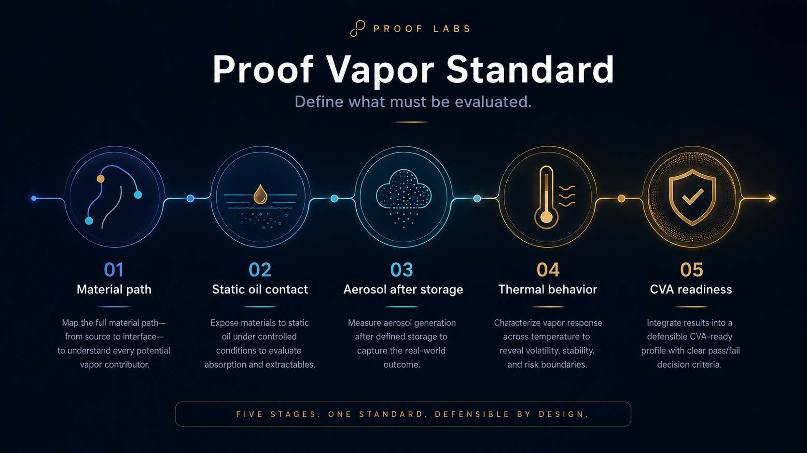
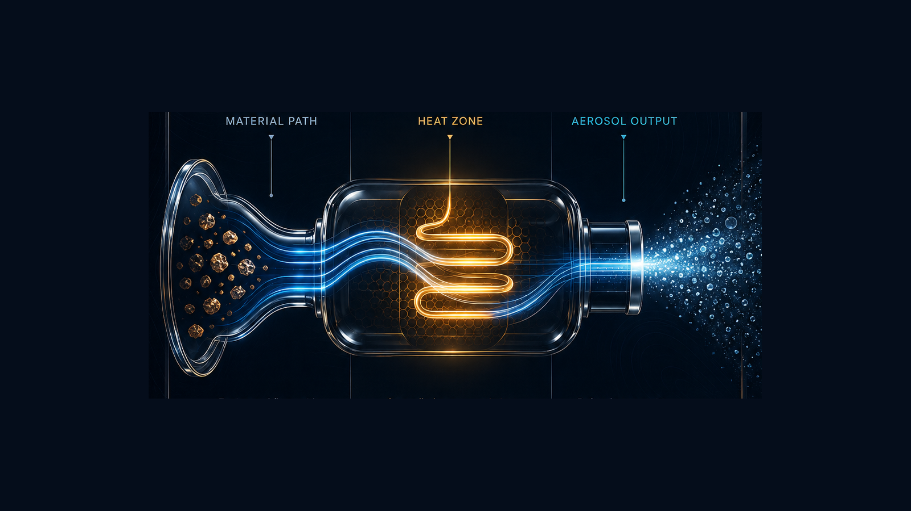
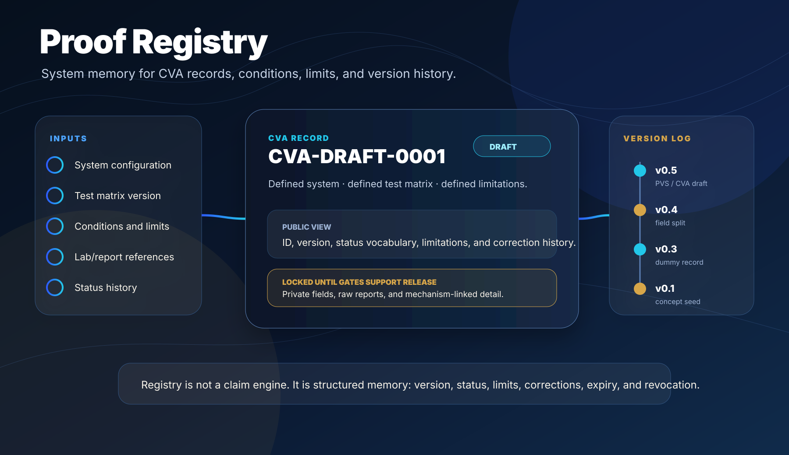

The standard explains what must be evaluated.
Proof Vapor Standard is the structured question set. CVA is the structured evidence record tied to defined conditions, limitations, and status.

Five gates.
The standard is adversarial by design. It asks whether the system can be mapped, tested, and documented across real lifecycle conditions.
Material Path Truth
What did oil and vapor contact?
Static Oil Contact / Storage
What changes after time, heat, orientation, and restorage?
Aerosol After Storage
What comes out after the system has lived in the device?
Thermal Control / Failure Modes
What happens under chain-pull, near-empty, or stress behavior?
Full-System CVA Readiness
Can findings be recorded with limitations and versioned status?

CVA records defined evidence. It does not certify safety.
CVA — Certificate of Vapor Analysis — is a structured evidence record tied to a system, test matrix, lab/reporting path, conditions, limits, and status. It is not a medical claim, regulatory approval, Proof Verified status, or public certification.
- Public/private field split.
- Status, correction, expiry, and revocation vocabulary.
- Registry-ready ID structure.
- Strict limitations language.
